Pikmin 251
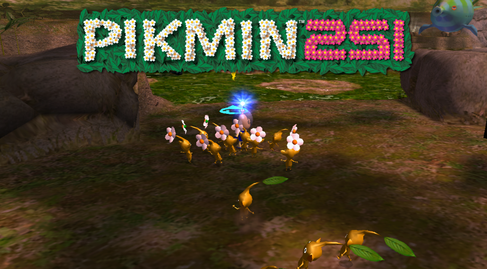The hack that started it all, my first attempt to create a whole new Pikmin game experience. It has new levels, music, enemies, treasures, and much much more.
DOWNLOAD
Colossal Caverns
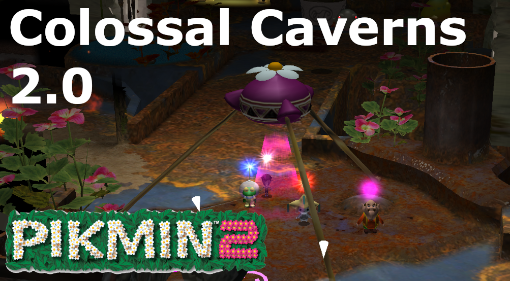Literally my biggest hack to date. One cave, every enemy, every treasure, every cave unit. So big it can only load with the power of Dolphin Emulator! Up to 4 players, 60 playable characters, more options than you can count, it really has it all.
DOWNLOAD
Endless Abyss
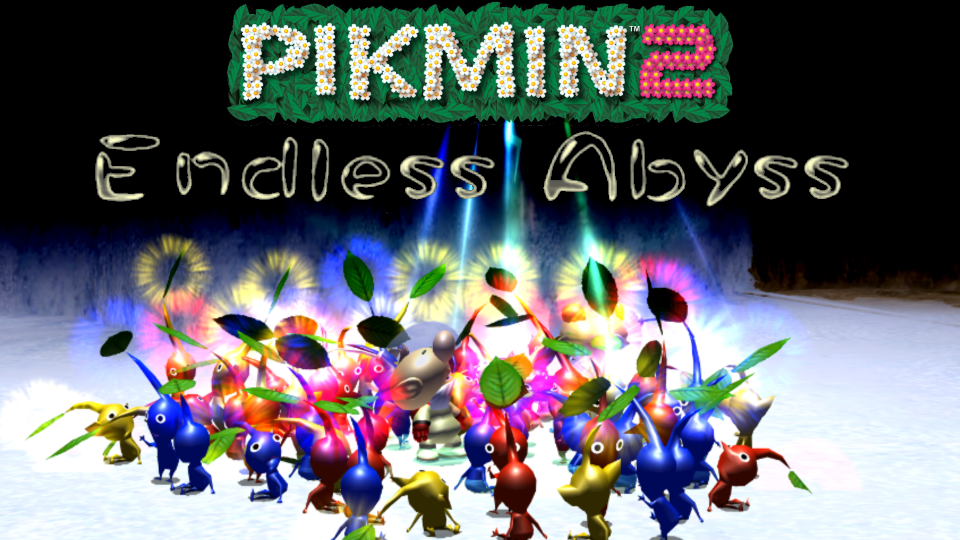Play through a neverending cave adventure! An endless supply of procedurally generated cave floors.
DOWNLOAD
Multiplayer
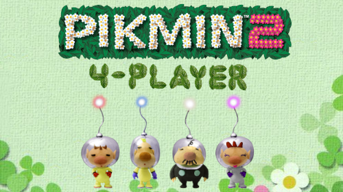Pikmin 2 but you can play with up to 3 friends! Also featuring a huge cast of playable characters, and other features.
DOWNLOAD
Purple and White Onions
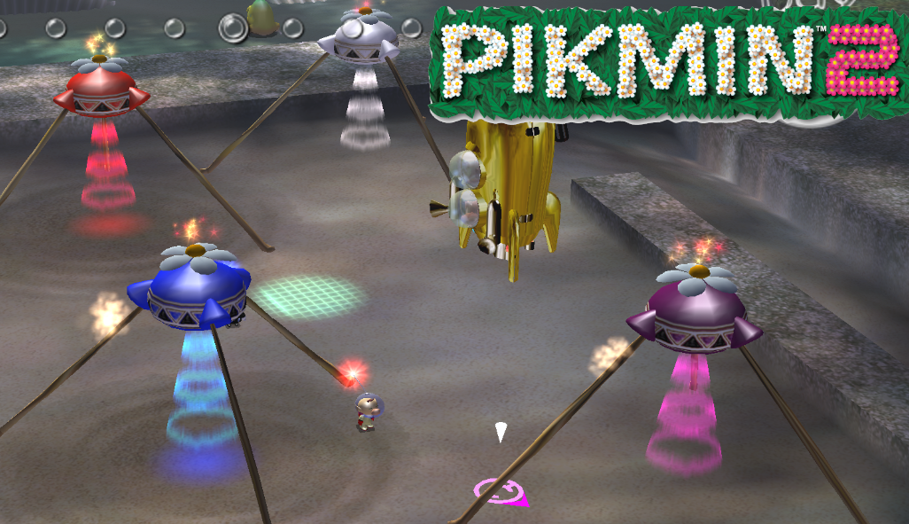Pikmin 2, but now with Purple and White Onions! A good base for your own Pikmin 2 Hack.
DOWNLOAD
The Adventures of Gilbert and Hank
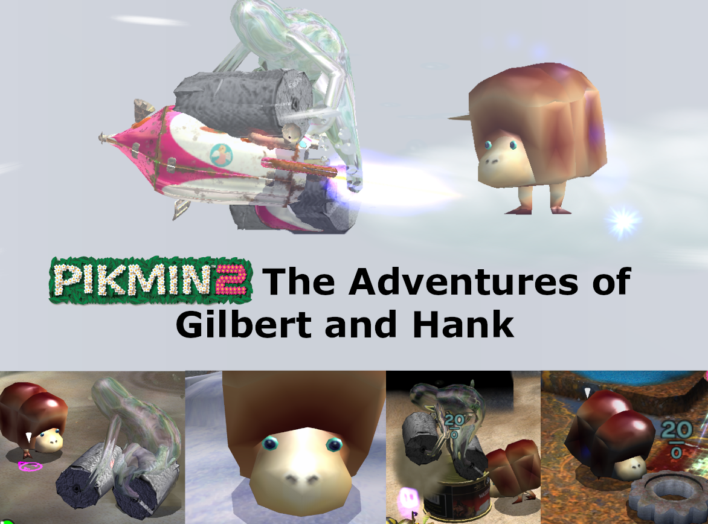Play the whole game as the dynamic duo of Hank the Waterwraith and Big Gilbert the Breadbug.
DOWNLOAD
Pikmini
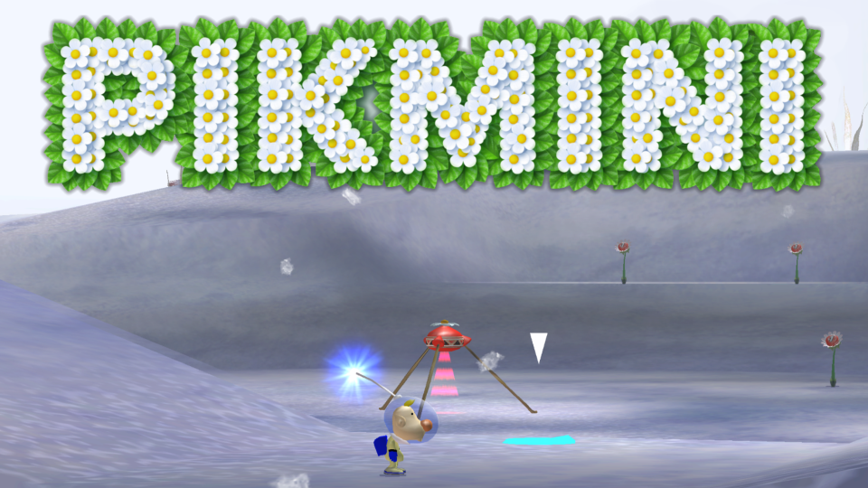Pikmin 2 but you and everything else are 1/4th the normal size, have fun.
DOWNLOAD
Quickmin
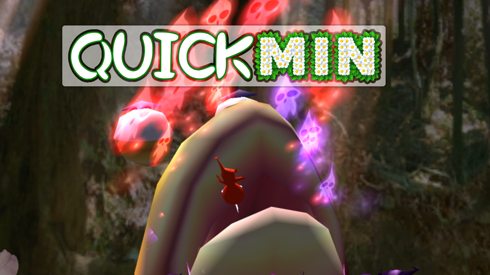Pikmin 2 but everything is fast, theres no cutscenes, and in general the game goes super fast. Suitable for when you want to play a whole game of Pikmin 2 but dont have time for such silly things as enjoying it.
DOWNLOAD
Pikmin Wars
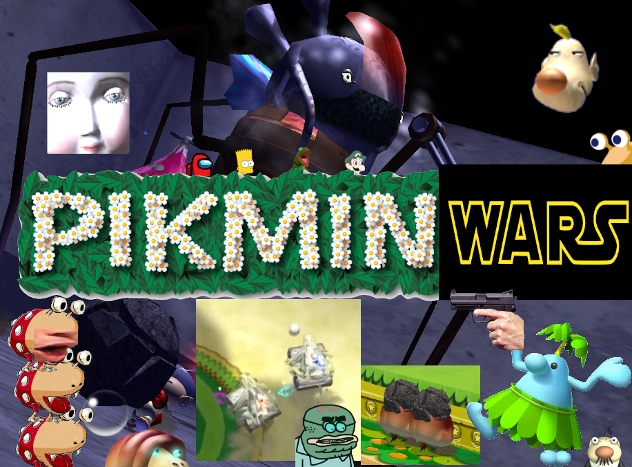A custom cave with all sorts of wacky gimmicks.
DOWNLOAD
Friday Night Pikmin

Play bootleg Friday Night Funkin within Pikmin 2! It is certainly a thing that exists
DOWNLOAD
Playable Enemies
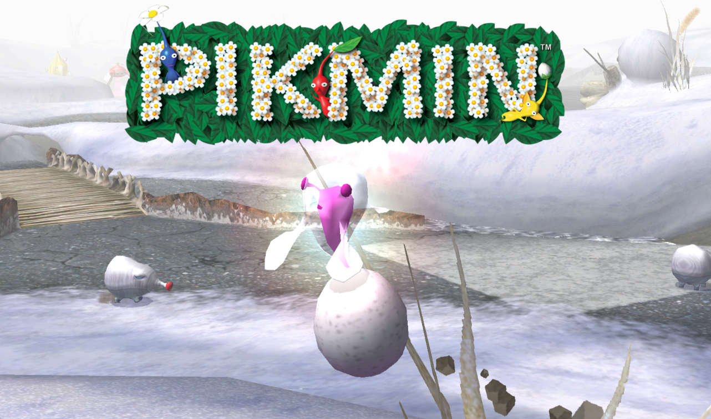Control any enemy in the whole game! Play by yourself, or against a friend.
DOWNLOAD
Pecan 2
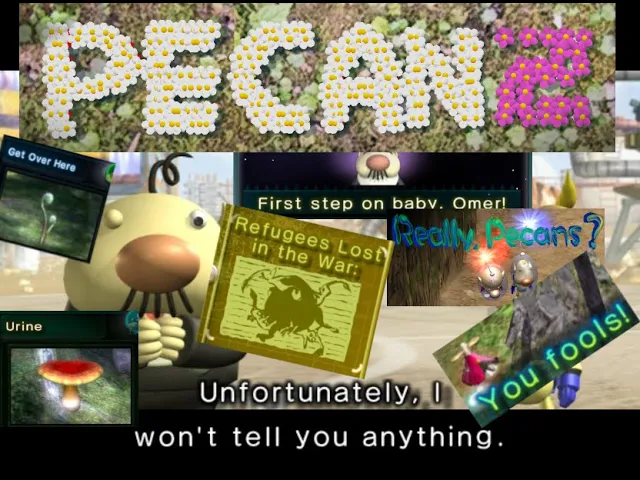Pikmin 2 put through way too many Google Translate layers!
DOWNLOAD
Practice Hacks
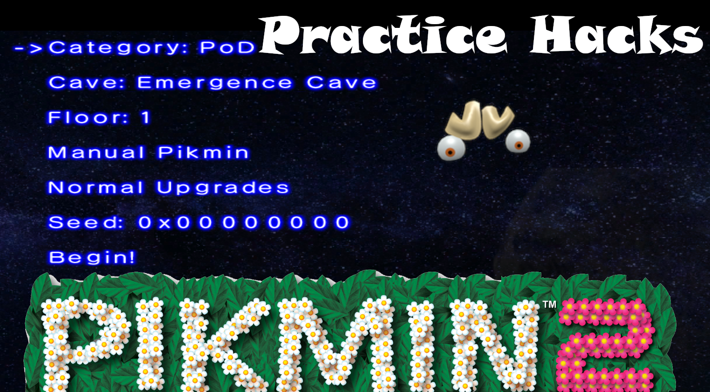The Speedrunners best friend. Lets you easily play through any cave floor with customizable settings.
DOWNLOAD
PIKBMD
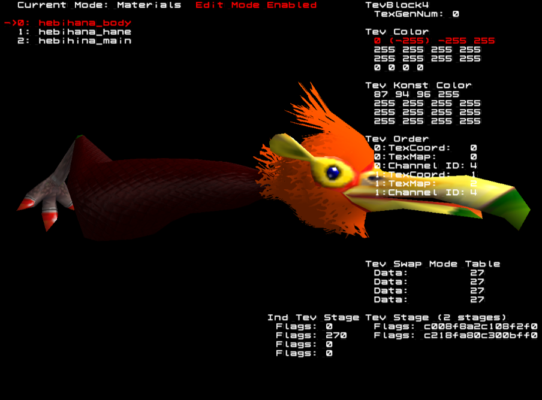A utility meant for viewing and experimenting with Pikmin 2's model and animation files. Has all sorts of neat features.